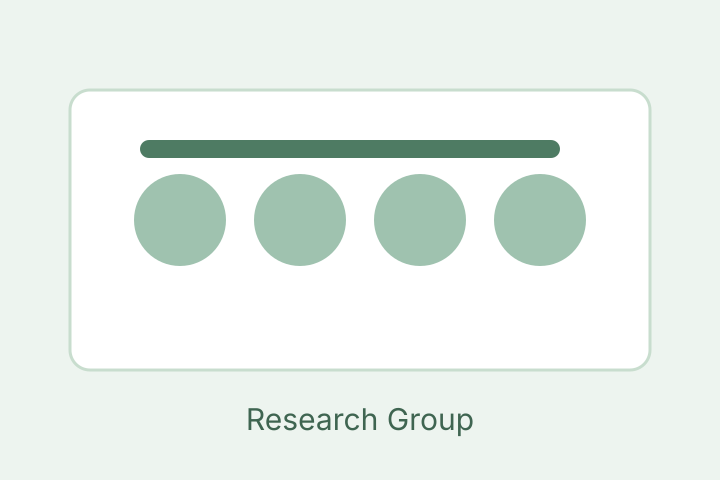
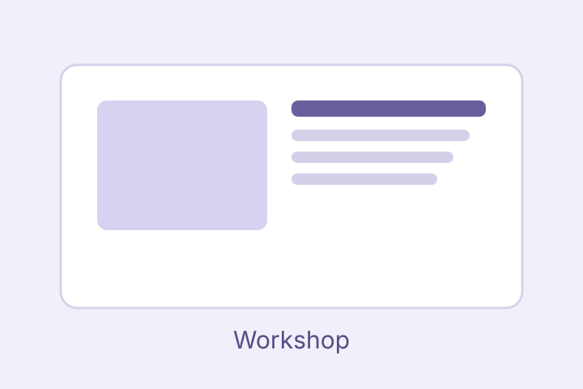

Interactive AI agents
Agents that adapt via brief feedback from people and their surroundings.
Ph.D. Scholar in Electrical Engineering, IIT Jodhpur, India
Ph.D. scholar in Electrical Engineering specializing in data-driven robotics, resilient control, and multi-robot systems
Overview
I am an Assistant Professor at Cornell CS and ML Researcher at Aurora.
I work on interactive AI agents that self-align through few-shot interactions with humans and their environment.
My research focuses on reinforcement learning (RLHF), imitation learning (IRL), and foundation models for planning, robotics, and code generation.
I also lead the PoRTaL group. We build everyday robots for everyday users.
Focus areas
Agents that adapt via brief feedback from people and their surroundings.
Aligning models with human intent using reinforcement learning from feedback.
Recovering objectives and policies from demonstrations and sparse signals.
Foundation models for robotics, code, and long-horizon decision-making.
Dissertation
Add a concise summary of your PhD research problem, methodology, and key findings. Include collaborators, grants, datasets, or open-source resources where appropriate.
Scholarship
Dubey, R.Gupta, S., Chaudhary, S., Tripathy, N.S. and Shah, S.V., 2024 , August. Finite-Time Convergence of Multi-robot Segregation using MPC with Aperiodic Motion Smoothing. In IEEE 20th International Conference on Automation Science and Engineering (CASE) at Bari, Italy. PDF
Your Name, Author, B. (Year). Journal publication title. Journal Name. DOI
Author, A., Author, B., Your Name. Manuscript title. In preparation.
Teaching
Institution · Semester Year
Led tutorials, graded assignments, mentored student projects.
Institution · Semester Year
Office hours and course content development.
Institution · Semester Year
Labs and applied coursework supervision.
Documents
Open PDFs below.
Photos
Conferences, workshops, and group activities.



Phone
+91 7415788781
Address
Department Name, University Name
City, Country